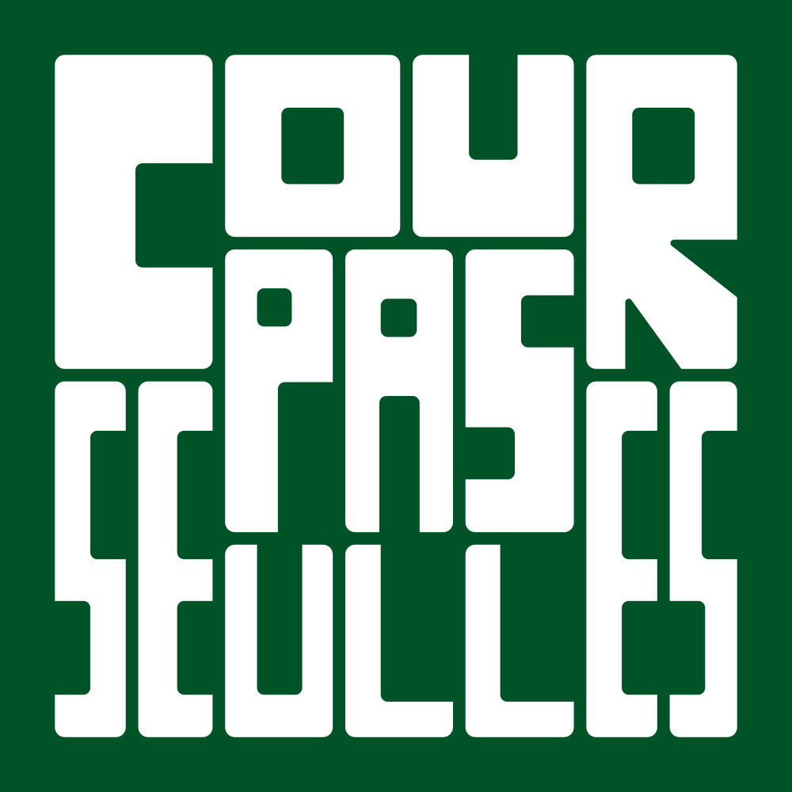

La Balade qui pique
12 km
Format 10-15 km · distance exacte à caler
- DépartDimanche 16 mai, 10h*
- TerrainDigue, plage, chemins
- DéniveléPlat comme la Manche
- Pour qui ?Tout le monde, vraiment
Voir le parcours

CourPasSeullesWeekend de Pentecôte 2027
Deux formats, un seul principe : on part ensemble, on arrive ensemble (ou presque). Choisis ton camp.
La Balade qui pique
12 km
Format 10-15 km · distance exacte à caler
Le Grand Large
30 km
Pour celles et ceux qui ont une montre qui coûte cher
* Horaires provisoires, tout est encore à confirmer.
Ton dernier footing, c'était…
Après la course, tu veux surtout…
Le vent de face sur la digue, ça te…
Les tracés arrivent bientôt. En attendant, voici à quoi ça pourrait ressembler.
Trois jours, une course, beaucoup de temps pour le reste. Programme provisoire.
15 Samedi
16 Dimanche
17 Lundi
Lundi 17 mai 2027 = lundi de Pentecôte, férié. Pratique.
Courseulles-sur-Mer, Calvados, sur la Côte de Nacre. Environ 3h de Paris en voiture. En train : gare de Caen, puis 25 min de route. On organise du covoiturage.
Logement à préciser : gîte collectif, camping ou chacun sa chambre ? On vous tient au courant très vite.
Huîtres, moules, cidre et teurgoule. Pasta party et repas du dimanche soir prévus pour tout le monde.
Baskets, coupe-vent (on est en Normandie), maillot de bain, bonne humeur et un déguisement pour la soirée.
Évidemment. Il faut aussi des gens pour encourager, faire des photos et tenir le ravito. Le weekend est pour tout le monde.
C'est une course entre amis, pas une compétition officielle. Il y aura sûrement un chrono pour les curieux, mais le classement le plus important, c'est celui du meilleur déguisement.
À définir. On essaie de garder ça le plus léger possible.
Oui, plus on est de fous… Prévenez-nous juste pour qu'on prévoie assez de couchages et de pâtes.
Les inscriptions ouvrent bientôt. Bloque déjà le weekend du 15 au 17 mai 2027.
Inscriptions bientôt